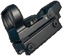

|
|
| 장탄수 | 25(35) |
| 발사 모드 | 단발/연사 |
| 몸통 기본 | 26~19.5 |
| 몸통 Lv1 | 18.2~13.65 |
| 몸통 Lv2 | 15.6~11.7 |
| 몸통 Lv3 | 11.7~8.775 |
| 머리 기본 | 46.8~35.1 |
| 머리 Lv1 | 32.8~24.6 |
| 머리 Lv2 | 28.1~21.075 |
| 머리 Lv3 | 21.1~15.825 |
| 팔/다리 | 12~16 |
| 저지력 | 5000 |
| 탄속 | 350m/s |
| 연사 간격 | 0.048초 (1250RPM) |
| 재장전 시간 (전술 재장전) | 3.100초 (2.500초) |
| 영점 거리 | 50 - 100 |
| 탄퍼짐 | 5.5 |
| MOA | 9.0 |
| 피해감소거리 | 31~144m |
| 등장 지역 | 에란겔, 미라마 |
| 총구 | |||
|---|---|---|---|
| 탄창 | |||
| 개머리판 |
UMP9의 2배에 육박하는 압도적인 연사 속도를 지닌 기관단총. 그러나 단발 피해량은 두 번째로 낮고 부착물이 없다면 반동도 심하며 별도의 조준기를 장착할 수 없기에 명중률도 나쁘다. 대신 근접전에서 높은 연사 속도로 S1897보다 빠르게 적을 눕힐 수 있으며, 효과적인 위협사격이나 이동 사격 등 기관단총의 전형적인 장점을 지니고 있다. 산탄총에 익숙하지 않은데 근접 전투 무기가 필요하다면 Micro UZI는 탁월한 선택이다. 악세서리를 장착하지 않은 상태에서 갖는 심한 반동과 조준기를 장착할 수 없다는 단점도 어디까지나 '근거리 화력'을 위해 채용하는지라 크게 문제되는 부분은 아니다.
Vector와 많이 비교되는데, 성능은 부착물 완전 장착 상태인 Vector가 피해량과 반동 부문에 있어서 Micro UZI보다 한참 우위이지만, 기동간 사격 능력은 UZI가 더 좋다. 그리고 Micro UZI는 S1897이나 권총과 함께 대표적인 초반 아이템으로 드랍률도 높고 탄약 수급 또한 훨씬 편리하다. 어차피 둘 다 연사력이 빨라서 0.5초 만에 사람 하나 잡는건 같은데다 결정적으로 대용량 탄창을 사용 시 Micro UZI의 장탄수는 35발인데 Vector는 25발이라 전투 지속력에서 차이가 크다.
다만 초당 약 25발이라는 어마어마한 연사력을 자랑하는지라 탄약에 신경 쓰지 않고 교전하면 순식간에 총알이 문자 그대로 증발한다. 또한 Tommy Gun과 마찬가지로 조준경을 장착할 수 없어 50미터 이상 중~장거리 교전에서는 다른 기관단총들보다 훨씬 떨어지는 교전능력을 갖기 때문에 돌격소총 및 저격소총 등 중·장거리 전투용 무기와 함께 운용하는 편이 좋다.
보정기와 전용 개머리판을 달면 두 효과를 합쳐 반동패턴 45% 감소, 수직 반동 45% 감소, 수평 반동 20% 감소, 반동 회복 15% 증가라는 어마어마한 효과를 누릴 수 있다. 엄청난 연사력에도 불구하고 말 그대로 거의 무반동으로 사격이 가능한데 30m 정도 거리라면 견착사격으로 사람 크기 표적 안에 쏘는대로 다 박히며 정조준을 하면 정말 한 점에 탄이 다 들어가는 경이로운 집탄군을 볼 수 있다. 조준기가 안 달린다지만 반동이 워낙 적어져서 불편한 폐쇄식 조준기로도 충분히 조준유지가 가능할 정도. 게다가 UZI는 근거리에서 엄폐물 뒤에 숨어 있다가 적절한 거리가 나오는 순간 달려 나가 3인칭조준으로 순식간에 적을 제압하는 식의 운용이 주가 되므로, 반동 보정 관련 아이템의 효과를 다른 총기들보다도 크게 누릴 수 있다. 보정기 대신 소음기를 장착한 경우 안개맵 같이 주변을 제대로 확인할 수 없는 상황에서는 그야말로 근거리 암살까지 가능하다. 다만 이러한 가정은 전부 전용 개머리판을 장착을 기본으로 삼고 있기 때문에 Micro UZI를 운용할거라면 반드시 개머리판을 최우선으로 확보해두자. 전용 개머리판 하나만으로도 수직 반동이 무려 20%나 감소한다.
현재 유저들의 평은 킹갓지. 노 파츠 상태에서도 대치 상황이나 초근접전에서 에임 실력만 좋다면 지향 사격으로 드르륵 갈겨 한 명 정도는 걍 눕혀버릴 수 있는데다가, 풀파츠라면 아무 부담 없이 근접 기동 타격을 맘껏 할 수 있는게 장점인 그야말로 근접전의 제왕. 게다가 파츠도 3개만 끼워줘도 되고, 9mm탄환과 SMG 파츠류는 필드에서 쉽게 구할 수 있다. 근접 부무장으로서의 선택이 많은 S686과 비교를 하자면, 잘 맞히기만 한다면 한 방에 저세상으로 보내버릴 수 있는 S686이 우위를 점하지만, 프로 선수들도 가끔 실수하는 총이 덥배인지라, 요리조리 무빙치면서 달려오는 적을 샷건으로 2발내에 잡기란 은근히 어려운 점도 있고, 벽과 벽을 사이에 두고 근접 대치중일 때도 Micro uzi는 총신이 권총급으로 매우 짧아서 기울여서 사격할 때 즉각적으로 적을 타격할 수 있는 반면 S686은 대치중일 때 벽에 붙어있으면 캐릭터가 위로총 혹은 아래총을 할 상황이 왕왕 생겨서 걸리적거리는데다가 충분히 기울이지 않는다면 땅바닥을 먼저 쏠 가능성이 높다. 이러한 역경을 뚫고 S686을 맞혀도 정식출시 때 변경된 대미지 계산공식으로 팔다리에 펠릿이 몇 발 들어가 상대방이 눕지 않는 순간 역으로 자신이 위험해지는데 Micro UZI는 이러한 위험에서 자유롭기 때문.
 |
|
| 장탄수 | 30(40) |
| 발사 모드 | 단발/2점사/연사 |
| 몸통 기본 | 39~29.25 |
| 몸통 Lv1 | 27.3~20.475 |
| 몸통 Lv2 | 23.4~17.55 |
| 몸통 Lv3 | 17.6~13.2 |
| 머리 기본 | 70.2~52.65 |
| 머리 Lv1 | 49.1~36.825 |
| 머리 Lv2 | 42.1~31.575 |
| 머리 Lv3 | 31.6~23.7 |
| 팔/다리 | 23~17.25 |
| 저지력 | 7000 |
| 탄속 | 400m/s |
| 연사 간격 | 0.092초 (약 652RPM)) |
| 점사 간격 | 0.085초 (약 706RPM) |
| 재장전 시간 (전술 재장전) | 3.100초 (2.550초) |
| 영점 거리 | 50 - 150 |
| 탄퍼짐 | 4.5 |
| MOA | 4.5 |
| 피해감소거리 | 61~300m |
| 등장 지역 | 에란겔, 미라마 |
| 조준경 |  |
 |
 |
 |
 |
 |
|---|---|---|---|---|---|---|
| 총구 | ||||||
| 하단 레일 |  |
 |
 |
 |
||
| 탄창 |
일명 움프. 독일어로 '다목적 기관단총'을 의미하는 Universale Maschinenpistole의 약어 표기로, 약어 표기의 독일어 발음은 우엠페 내지는 움페 정도가 된다.
이름 그대로 다방면에서 활약이 가능한 올라운더 기관단총. 전체적으로 'SMG와 AR 중간' 정도의 성능이다. 다른 기관단총에 비하면 유효사거리가 길고 전투 지속력이 좋으며 / 돌격소총에 비하면 탄 퍼짐과 반동이 확연히 덜하다. 타 SMG가 50m 정도를 벗어나면 거의 무쓸모가 되는 것과 달리 UMP는 100m 까지는 무난하게 커버하며, 전투 지속력이 가장 좋은 SMG라 듀오나 스쿼드에선 Vector나 우지보다 더 선호하는 편이다. 또한 이동 사격 시 명중률이 현저히 떨어지는 돌격소총과 달리 UMP9는 부착물 하나 없이도 탄퍼짐과 반동이 작으며, 이동 사격 중에도 명중률 문제가 크게 발생하지 않는다. 전방 손잡이와 각종 조준경까지 부착했다면 조준 사격 시의 반동 제어까지 수월해지며 보정기까지 달면 쏘는 대로 다 맞는 레이저 총기가 된다. 거기다 UMP9가 지원하는 부착물의 가짓수 또한 Vector 다음으로 많은 4종이나 되기에 안 그래도 준수한 반동 제어와 탄 퍼짐을 더욱 확실하게 개선할 수 있다. SMG용 부착물은 드랍률이 높다는 것도 소소한 장점.
물론 단점 또한 둘의 중간정도. 돌격소총에 비하면 유효사거리가 짧고 / 다른 기관단총에 비하면 순간화력이 떨어진다. 곧 죽어도 SMG다 보니 탄속과 낙차가 심해서 100m를 벗어난 250m대의 싸움은 돌격소총에게 밀릴 수밖에 없으며, 순간 화력 또한 총알을 때려박는 우지나 Vector에게 밀리기 떄문에 근접전 특화 용도로 기관단총을 사용하는 플레이어에게는 평가가 박하다.
UMP9 같이 중간 위치에 껴있는 총기는 다방면에서 활약할 수 있는 만능 총기가 될 수도, 반대로 모든 부분에서 애매해질 수도 있는데, UMP9가 현재의 성능으로 햐향 조치되기 전인 PUBG 초창기에는 근·중·장거리 모두 대응이 가능한 높은 활용성과 준수한 성능 및 수월한 탄약 확보와 총기 입수 자체가 쉽다는 장점으로 애용 받는 전자에 속했다. 그러나 하향 조치 이후에는 거리에 따른 피해량이 감소하고 장거리 사격시의 반동이 커졌으며 기관단총 운용 방식이 산탄총처럼 근접전 전용으로 정립된 현재로는 위치가 애매해지는 후자에 속한다.
획득 확률이 거의 '국민총'이라고 불릴 정도로 높고, 9mm 탄환 역시 널리고 널린 권총들 때문에 거의 무제한으로 공급이 되므로, 극초반 파밍 상황에서는 돌격소총 대용품으로 사용할 수 있다. 부착물이 하나도 달려있지 않은 상태에서도 탄착군이 좁고 반동이 적다는 특징 덕분에 초반 싸움이라는 경우에 따라선 의외로 돌격소총보다도 강력한 총기일 수도 있다. 거리를 잘 재면서 우클릭을 꾹 눌러 3인칭 견착을 한 상태에서 좌우로 왔다갔다 무빙을 하면서 쏘는 것이 이 총의 장점을 가장 잘 살리는 방법이다.
그러나 만일 이런 상황이 '중반'까지 이어지게 된다면 파밍이 부실한 상황이라 볼 수 있다. UMP와 돌격소총은 서로 사용처가 겹치는 부분이 많아 둘 중 하나만 들어야 하는데, 현재 게임 메타에서 돌격소총은 필수적으로 장비해야할 주력 화기이며, 실내전이나 기습 등의 특수한 상황이 아니고서야 UMP9는 돌격소총과의 경쟁에서 밀릴 수밖에 없다. 근거리 특화인 다른 기관단총이나 샷건에는 당연히 압살당하고 너무 멀면 당연히 AR이나 SR에 농락당할 수밖에 없는 게 현실이다. 권총탄을 써서 탄속은 AR이나 SR에 절반 남짓밖에 되지 않으며 낙차가 심한데다 피해량도 낮기 때문. 분명 먼저 상대를 맞혔는데도 도리어 내가 맞아죽는 상황이 벌어지는 건 흔한 일상이다. 그러니 원거리에서 돌격소총이나 저격소총을 만났다면 일단 그 자리를 피하고 근거리 전투를 시도하는 것이 좋다.
물론 안전지대가 많이 좁아진 상황에서는 UMP9가 돌격소총에 비해 크게 밀리진 않으니 UMP9로 1등을 노릴 수 있다. 근거리전에서 취약한 점도 다른 기관단총에 비해 화력이 부족하다는 것이며 돌격소총과의 근중거리 전투에서 '무빙샷', 반동 제어에 있어서는 UMP9가 여전히 우위이다. 더욱이 중거리 사격 시의 조준 안정성이 높다는 점은 조준 실력이 낮을수록 큰 이점으로 작용한다. 그러니 상황에 따라 그 좋다는 Groza 먹고 2발 맞힐 바에야, 자기 손에 맞는 UMP9로 4발을 맞히는 게 나을 수도 있다. 단점은 많지만 치명적인 부분은 없고 그 단점을 충분히 장점으로 바꿔 활용할 수도 있는 총이니 자기 손에 맞다 생각된다면 다른 유저들의 별로라는 말 따라 버리지 말고 UMP9를 잘 활용해보는 것도 좋다.
4배율 조준경과 소음기를 장착할 경우 VSS 저격소총 대용으로 써먹을 수도 있다. 물론 저격소총이 아니므로 소음 성능과 저지력이 훨씬 떨어지고 비과음은 더 크게 들리는데다 탄환 궤적이 전혀 보이지 않으며, 피해량 감소폭도 크므로 완전히 대체할 수 있는 건 아니다.
돌격소총과 겹치는 점이 많아서 중반만 가도 버릴 총이라는 인식이 있으나 이런 점을 반대로 이용해 스쿼드에 초보 한둘을 끼워 플레이할 때 쓸 훈련용 총기로는 유용하다. 배그를 하다보면 돌격소총을 자주 쓸 수밖에 없지만 서든어택이나 오버워치만 하다 온 초보가 쓰기에는 돌격소총은 적응이 매우 어렵고. 제대로 쏘지도 못하는 초보자에게 5.56mm탄이나 7.62mm탄을 주기에는 기회비용이 너무 크기 때문. UMP는 9mm가 워낙 흔한 탄이라 실력 있는 분대원들의 소총탄에 영향을 주지도 않으며 비교적 명중률이 높아서 초보자도 나쁘지 않은 적중률을 보여주는데다가 장거리전이 약하다보니 "이 게임에는 탄낙차라는 게 있다"라든지 "괜히 멀리 있는 SR 든 적에게 총쏴대며 나대지 말고 숨어있어라."를 교육시키기에 이만한 총도 없다.
다른 SMG와는 다르게 근중거리까지 커버한다는 점, 탄 수급이 쉽다는 점 덕분에 어쩔 수 없이 가난한 플레이를 하게 되는 대회에서는 자주 보이는 총이다.
 |
|
| 장탄수 | 30(50) |
| 발사 모드 | 단발/연사 |
| 몸통 기본 | 40~30 |
| 몸통 Lv1 | 28~21 |
| 몸통 Lv2 | 24~18 |
| 몸통 Lv3 | 18~13.5 |
| 머리 기본 | 72~54 |
| 머리 Lv1 | 50.4~37.8 |
| 머리 Lv2 | 43.2~32.4 |
| 머리 Lv3 | 32.4~24.3 |
| 팔/다리 | 24~18 |
| 저지력 | 7000 |
| 탄속 | 280m/s |
| 연사 간격 | 0.086초 (약 698RPM) |
| 재장전 시간 (전술 재장전) | 3.450초 (2.850초) |
| 영점 거리 | 50 - 150 |
| 탄퍼짐 | 4.5 |
| MOA | 4.9 |
| 피해감소거리 | 81~243m |
| 등장 지역 | 에란겔, 미라마 |
| 총구 | |||
|---|---|---|---|
| 하단 레일 | |
||
| 탄창 |
최대 50발이라는 가장 많은 장탄수를 지닌 기관단총.SMG 대용량 탄창은 비교적 구하기 쉽기에 제압사격 시에 유리하다. 비슷한 용도인 M249 '경기관총'과 비교하면 장전 속도도 월등히 빠르므로 스쿼드 경기에서도 활약할 수 있다. 연사력도 M416과 동일한 수준이라 SMG 중에서는 단발화력이 가장 높다는 점을 생각해 본다면 화력은 나쁘지 않은 셈. 스쿼드 경기에서는 주력 총기인 5.56mm 계열 돌격소총의 탄약이 부족해지는 경우가 많은데 이때 .45 ACP 탄약을 넉넉하게 챙겨놨다면 팀의 부담이 줄어든다. 마피아가 자주 썼다는 사실을 반영한 총기 설명이 특징.
그렇지만 단점도 많다. 큰 반동과 더불어 조준경을 부착할 수 없기에 교전 거리가 벌어질수록 운용이 어렵다. 수직 손잡이를 부착했더라도 수직, 수평 반동이 모두 커서 한 5발만 넘게 쐈다 싶으면 총이 제멋대로 날뛴다. 정작 보정기는 부착 불가능인지라 반동제어에 숙련이 필요하다.무턱대고 지향사격으로 갈겼다간 자칫 지근거리에서 한 탄창을 다 쏟아도 한 발도 안 맞더라는 프랭크 맥클레인의 실화를 PUBG에서도 재현하게 된다. 그리고 시가전에서는 많은 장탄으로 생각보다 높은 제압률을 보여주지만 문제는 그게 전부(...) 돌진을 하자니 Micro UZI나 샷건한테 화력이 밀리고 중거리 교전을 하자니 반동이 강하고 조준경이 부착되지 않아 정확한 사격이 어렵고 중거리용으론 이거보다 더 좋은 UMP9이 있어서 초반이라도 드는 사람을 보기 힘든 비운의 총기.
다만 앞서 말한 단점이 듀오나 스쿼드에서는 장점이 될 수 있다. 솔로에서는 UZI나 Vector의 탄창 하나를 다 쏟아 부어 한 명을 죽여도 후환이 없지만, 듀오나 스쿼드에서는 탄창을 다 부어서 한 명을 죽여도 다른 적이 엄호 사격을 하거나 같은 방에 같이 있는 경우가 많기 때문에 선호도가 떨어진다. 톰슨을 든다면 한 탄창으로 여려 명 잡기 충분하고, 재장전 속도도 빠르다. 다만 시가전에서는 분명 톰슨보다 산탄총의 피해량이 더 높고 결정적으로 AR이 그 자리를 대신할 수 있기 때문에 이른바 빤스런 스쿼드가 아니라면 사실상 취향 차원의 문제이다.
근거리 전투용으로는 괜찮다. SMG 치곤 연사력이 비교적 낮은 편이라 근접전용 총기에 비해서 DPS가 좀 낮긴 하다만 반동은 수직 손잡이를 달면 그럭저럭 버틸만 하고 피해량도 5.56mm 계열 AR보다 약간 낮은 수준이라 도박성이 강한 다른 근접용 총에 비해 적을 확실히 눕힐 수 있다. 대용량 탄창 장착 시 장탄수 50발이라는 이점은 다수의 플레이어를 상대하는 스쿼드 경기에서 좋다.
부착물을 완전히 장착한 상태라면 검문소 전술 구사 시에도 그럭저럭 쓸만하지만 본격적인 경기관총에 비하면 확실하게 화력이 떨어지므로 DP-28이나 M249가 있다면 해당 무기로 무조건 교체하는 것이 이롭다.
토미건으로 중거리 교전을 할 생각이라면 접는 것이 좋다. 교체 불가능한 기계식 조준기는 부착식 조준경보다 불편하지만, 그렇다고 조준이 불가능할 정도는 아니긴 하다. 개방형 조준기여서 다른 총기에 비해 시야가 넓고 조준이 편한 편. 조준만 제대로 하면 레드닷이라면 맞을 상황에서 기계식 조준기라고 안 맞진 않는다. 하지만 탄속이 280m/s로 발사체의 속도가 석궁 다음으로 느리며 기계식 조준기로 반동제어 하면서 조준 유지하기도 쉽지 않다. 일단 AR이라 탄속도 715m/s로 훨씬 우월하고 조준기도 달리는 AKM도 중거리 싸움에선 한없이 취약하다는 평가를 받는 마당에 석궁 다음으로 느려터진 토미건 '따위'로 중거리 교전이 가능할리가 없다. 일단 AR이 없으면 획득할 때까지만 토미건을 들고 중거리에선 조준이 편한 다른 SMG에게도 밀릴 수도 있으니 현명하게 판단하자.
수직 손잡이 장착 시 총열덮개가 아예 교체되어 과거 보급 상자 시절의 일체형 전방 손잡이가 달린다. 대용량 탄창 장착 시에는 기존의 막대 탄창에서 드럼 탄창으로 바뀌고, 퀵 드로우 탄창 및 대용량 퀵 드로우 탄창 장착시 맥풀 P-MAG처럼 플라스틱 손잡이가 달리는 다른 총의 탄창과 다르게 일반 탄창 및 드럼 탄창 아래에 끈이 붙은 싸구려틱한 모습이 된다. 그런데 이 끈에 천 물리 효과가 적용되거나 흔들리는 애니메이션이 나오는 것도 아니고 플라스틱처럼 빳빳하게 고정되어 있어서 미관상 굉장히 이질적이다.
지원하는 총구 부착물로는 소음기가 있으나 크게 의미는 없다. 어차피 기관단총은 중근거리를 넘어가는 교전거리에서 쓸 일도 없고 '시카고 타자기'라는 별명답게 기본 총성이 어마어마 큰데, 소음기를 달아도 타자기에서 기계식 키보드로 갈아탄 수준이며 중거리도 싸워볼만한 타 SMG랑 다르게 이건 근거리용이라 별 쓸모가 없다.
UMP9와 비교해보자면 처치 확정에 필요한 탄환수가 적고 연사 속도가 조금 더 빠르며 장탄수가 많다는 것 외에는 모든 점이 UMP9에 밀린다. 스쿼드 전투의 근거리 교전에서 적을 제압 후 다른 적을 조준하는 상황이 나오는데 보통 적과의 거리가 3인칭으로 쏘기에는 먼 경우가 대부분이다. 이때 AR로 교체하거나 정조준을 하는데 조준경을 달 수 없고 반동이 심한 토미건이 UMP9에 비해 명중률과 제압률이 현저히 떨어진다. 즉, 스펙 자체는 UMP9보다 우월하지만 총기가 가진 잠재력을 UMP9만큼 활용하는게 매우 힘들다는 것이다.
정리하자면 AKM과 비슷하다고 할 수 있다. 같은 무기군에 존재하는 타 총기들 보다 단발 화력이 우수하여 근접전 및 차량을 폭파하는데 강력하나 부착물들로 커버가 불가능할 정도로 반동이 커 초근접이나 차량이 아니고선 맞히기 어렵다는 이유로 플레이어들이 기피하는 총기라는 공통점을 가지고 있다. 차이점이라면 AKM은 조준경을 부착할 수 있고 어쨌거나 명색이 AR이기에 중장거리 교전도 어찌 가능은 한 수준이라 아쉬운대로 사용하기라도 하지만 Tommy gun은...
얼리 액세스 시절에는 보급상자에서만 획득할 수 있었는데 보급 총기치고는 떨어지는 성능으로 인해 카구팔과 더불어 꽝 취급을 받곤 했다.
필드 드랍으로 변경된 패치 직후 앵글 손잡이를 장착할 수 있는 버그가 있었으나 머지않아 수정되었다. 앵글 손잡이를 달면 총열덮개가 아예 없어지고 총열에 바로 앵글 손잡이가 부착되는데 탄창 텍스쳐와 겹쳐지긴 해도 생각보다 시각적으로 자연스러워서 버그인지도 몰랐던 플레이어도 제법 있었다. 물론 허공에 수직 손잡이처럼 파지하기 때문에 눈썰미가 있다면 바로 알아챌 수 있었다.
게임 상에 등장하는 다른 SMG나 AR은 탄창을 포함해도 무게가 4kg 정도이지만 실총인 M1928A1은 5kg에 달하는 육중한 무게를 자랑한다. 하지만 게임 내에선 이 총을 한손으로 높이 쳐들고 달리는 캐릭터를 볼 수 있다. 개발 당시는 현대의 폴리머 같은 만능 소재는 있지도 않았고 알루미늄은 알루미늄 먹는 괴물의 수요가 너무 많아서 가격이 비쌌기에, 철과 원목으로 제작되었기 때문. 이와 더불어 톰슨 기관단총 특유의 네모난 총몸 내부를 통짜 쇳덩어리 노리쇠가 꽉 채우고 있는 구조 탓이기도 하다.
과거 보급 상자로만 획득할 수 있던 시절엔 모델이 M1928이었지만 필드 드랍으로 바뀌면서 덩달아 M1928A1 모델로 바뀌었다. 하지만 수직 손잡이 장착시 본래 M1928A1 모델에 붙는 핸드가드가 떨어지고 그 유명한 시카고 타자기 모델인 M1928용 손잡이가 붙어 다시 M1928이 된다.
정조준을 할 시 플레이어의 왼쪽 어깨가 보이는 버그가 있다.
2018년 5월 8일 패치로 상향되었다. 일단 견디기 힘든 수준이었던 반동이 크게 줄어들었고, SMG의 기계식 조준기가 날카롭게 바뀌는 패치가 토미건에도 적용되었기 때문에 조준 역시 전보다 용이해졌다. 수직손잡이를 달면 반동제어도 어렵지 않기 때문에 중근거리전에서 ump에게 밀리지 않을 정도다. 물론 도트 사이트를 달 수 없다는 단점은 여전히 크기 때문에 ump만큼 후반까지 주무기로 이용되진 않는다. 하지만 초반 싸움에서 토미건을 선택할 때 예전보다 더 큰 이득을 볼 수 있다.
 |
|
| 장탄수 | 13(25) |
| 발사 모드 | 단발/2점사/연사 |
| 몸통 기본 | 34~25.5 |
| 몸통 Lv1 | 23.8~17.85 |
| 몸통 Lv2 | 20.4~15.3 |
| 몸통 Lv3 | 15.3~11.475 |
| 머리 기본 | 61.2~45.9 |
| 머리 Lv1 | 42.8~32.1 |
| 머리 Lv2 | 36.7~27.525 |
| 머리 Lv3 | 27.5~20.625 |
| 팔/다리 | 20~15 |
| 저지력 | 7000 |
| 탄속 | 300m/s |
| 연사 간격 | 0.0545초 (약 1101RPM) |
| 점사 간격 | 0.0545초 (약 1101RPM) |
| 재장전 시간 (전술 재장전) | 2.200초 (2.100초) |
| 영점 거리 | 50 - 150 |
| 탄퍼짐 | 4.5 |
| MOA | 7.5 |
| 피해감소거리 | 51~146m |
| 등장 지역 | 에란겔, 미라마 |
| 조준경 | |
|
|
|
|
|
|---|---|---|---|---|---|---|
| 총구 | ||||||
| 하단 레일 | |
|
|
|||
| 탄창 | ||||||
| 개머리판 |
근·중거리 초당 피해량(DPS)이 가장 강한 기관단총이다. 초당 18발, 분당 1100발을 연사할 수 있고, 이는 1250 RPM의 우지보다 약간 낮은 정도지만 발당 피해량이 벡터쪽이 우월해 DPS는 벡터쪽이 훨씬 높다. 기본 반동은 높지만 부착물이 5가지나 되기 때문에 잠재력이 아주 높아서 풀파츠 시 Groza에 버금가는 고위력, 저반동의 양탑이다. 보정기+수직손잡이+개머리판이면 반동제어 없이도 무반동 사격이 된다! 부착물의 가짓수가 매우 많이 필요하기는 하지만 기관단총이기 때문에 드롭률이 낮은 파츠도 없어 운만 따라준다면 짧은 시간 안에 대부분의 부착물들을 모을 수도 있다.
다만 기본 탄창의 장탄수가 고작 13발밖에 안 되는데 자체의 연사력도 있다 보니 정말 눈 깜짝할 새에 비어버리므로 대용량 탄창이 없다면 사용하기 부담스럽다. 또한 탄 관리도 힘든데, 원체 연사 속도가 빠른 탓에 대용량 탄창에 들어가는 25발을 대충 1.2초만에 몽땅 쏴버리므로 열댓 발을 퍼부어 한 명을 기절시킬 수는 있지만 남은 장탄으로 두 명 이상이 밀고 들어온다면 잡기가 어렵다. 게다가 연사력이 좋다는 것 덕분에 풀파츠가 아닌 이상 반동이 정말로 심하다는 것도 양날의 검. 이동시 분산도가 너무 벌어져서 SMG만의 전매특허인 근접 기동타격 가능거리가 짧은 것도 문제점.
위의 이유 때문에 대용량 탄창이 강제되는 편. 대용량 탄창을 장착했을 땐 샷건과 비슷한 근접전 결전병기가 된다. 산탄총과 보급상자에서 등장하는 총기들을 제외하면 일대일 전투에서 상대를 처치하는 속도가 가장 빠르고 빗나가면 치명적인 산탄총과 달리 연사형 무기기 때문에 대충 몸에 대고 긁다보면 우월한 연사력으로 인해 쉽게 녹일 수 있다. 부착물을 모두 확보하게 되는 후반부 전투에서는 오히려 산탄총보다 훨씬 빠르게 쓰러뜨릴 수 있다.
단순한 보조무기라고 탄을 부족하게 챙겼다면 극도로 높은 연사력 때문에 순식간에 탄약이 바닥난다. 또한 포텐셜을 전부 끌어올리기 위해서는 M4나 SKS 수준의 많은 부착물들을 요구하는 점 때문에 많은 부착물이 없어도 근접전에서 최상의 성능을 발휘하는 UZI나 샷건류와 비교해 메리트가 있느냐는 의문도 많은 편. 게다가 부착물을 장착하여도 반동 감소와 정조준 상태의 편의성을 제공할 뿐 가장 큰 문제인 이동사격의 큰 분산도는 해결되지 않는다.그나마 Tommy Gun이 필드 드랍으로 바뀜에 따라 .45 ACP 탄약을 사용하는 Vector 기관단총의 탄약 수급이 조금 더 용이해지는 간접 상향을 받았다. Tommy Gun이 필드 드랍 되기 전에는 같은 Vector 말고는 P1911과 같이 나오는 15발 내지 30발을 꾸역꾸역 줍는 수밖에 없었다. 특히 미라마에서는 같이 출시된 Win94가 .45 ACP탄 사용 + 높은 드랍률 + 버리는 총 취급의 3박자로 탄 수급이 굉장히 용이하다. 건물 하나 털었는데 약 100여발이 나오는 경우도 상당히 흔한 편.
상기한 문제에 더해 기본 드랍율이 상당히 낮은 것 역시 유저들이 기피하는 원인이었는데, AR의 대미지 너프와 반동 향상, 샷건의 근접전 킬 결정적이 떨어진 너프 덕분에 근접무기로 채용할만한 이점이 상당히 늘어났고, 2018년 6월에는 드랍율도 늘어나서 유저들의 선호도가 높아졌다.
다른 SMG들과 차별화되는 특성이 있는데 이 총은 일반 재장전과 전술 재장전의 시간 차이가 거의 없다. 위의 표에 나오듯 0.1초 내외의 극히 짧은 차이만이 있을 뿐이다. 실제로 백터에는 돌격소총처럼 원터치 노리쇠 전진 버튼이 달려있다. 일반적으로 파지했을 때 왼손가락이 닿는 곳에 위치해 있으므로 나름 현실 반영인 셈이다.다만 이로 인해 장전 시간이 너무 짧아 퀵드로우 계열 탄창에의 이득을 많이 못 본다는 단점 아닌 단점이 있다. 반대로 생각해 보면, 대용량 퀵드로우가 아니라 대용량 탄창만을 장착해도 성능상 별 차이가 없다는 것.
소음기를 장착하면 배럴이 더욱 길어져 명중률이 올라갈 것 같지만 소음기가 없는 것과 크게 차이가 나지 않으며 교전거리를 생각해 보았을 때에는 보정기를 끼는 게 더 좋다. 이는 Vector뿐만 아니라 Tommy gun을 제외한 SMG에 해당되는 사항이다.
모양새는 KRISS Vector의 1세대~3세대 모델을 섞인 모습이다. 도색 자체는 처음 선보인 초기형에 가까우며 기본 개머리판은 2세대, 전술 개머리판을 장착하면 3세대의 개머리판으로 바뀌게 된다. 소음기를 장착하면 드르륵 하고 소리가 난다.